[To catch up, here are Days 1 and 2-A and 2-B and 3 and 4 and 5A and 5B and 5C]
Honestly, we were kind of dreading this day. Yes, we had our families and important obligations waiting for us on the other end. But how could we part from the beauty of this incredible week, peeking into the reality of what heaven surely must be like?
Thankfully, we had one more morning of speakers, and a final Mass to send us out with Jesus in us through the Eucharist. Everything about this congress was well-ordered, and this final day was all about sending us back out into the world with a commission: to spread the Good News!
We were already on board before we arrived on Thursday, but our souls were becoming atrophied from the weight of the world. We’d come through so much in recent years: wars, a pandemic, isolation, frustration, family ties ripped to shreds, and confusion. We need to gather again, and be reminded of who we are: the Salt of the Earth, being led by the Light of the World!
I caught this moment on the way to the Lucas Oil Stadium, and had to run back to get a last photo of the congress crucifix, which we’d passed by many times in the last days. He seemed to be saying goodbye here.

When Joanne and I arrived at the stadium that last morning, we made an effort to find the center of the stadium. Until now, we’d always entered from one of the sides, and could never see the altar straight on. The only problem was that many others had the same idea, and we kept being sent higher and higher up, to another level, and another. Even when we thought we’d found decent seats, we were told they were reserved for the disabled. So up we went further.
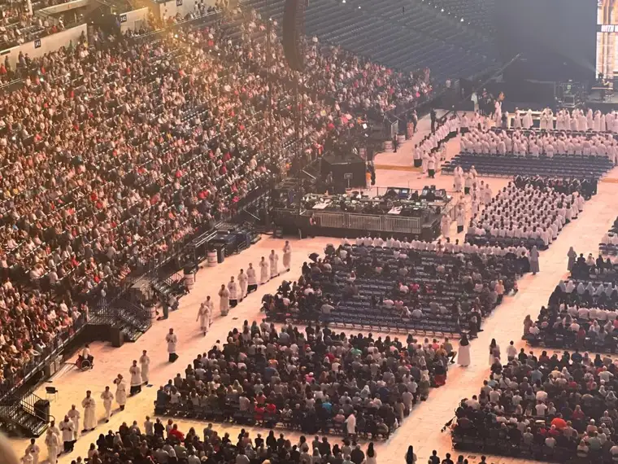
Just as we had done this entire trip, though, Joanne and I took it all in stride. In the end, God surprised us with the most spectacular view from on high that made us feel like we were angels in the heavens looking down on the congress, in awe.
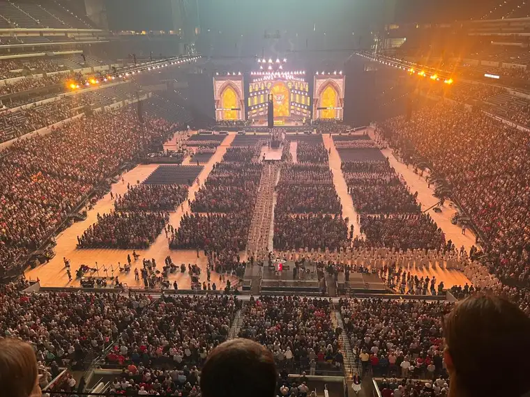
Can you see the rows of priests up front, and the many religious sisters (habits) in the middle? So decadent!
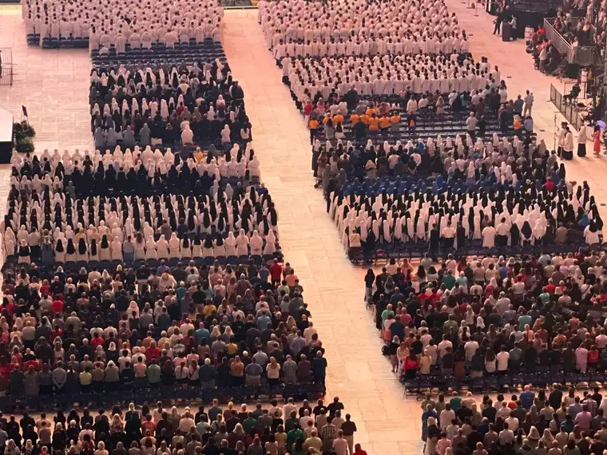
I’ve shared photos of the stadium filled with people before, but these are some of my favorites, because they show the depths of the people who had come with us to praise and honor our Lord Jesus Christ.
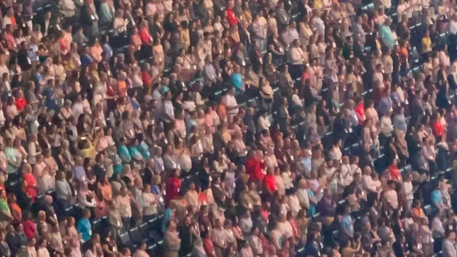
Once again, the altar was nicely done, this day in yellow, with some beautiful flowers in front.
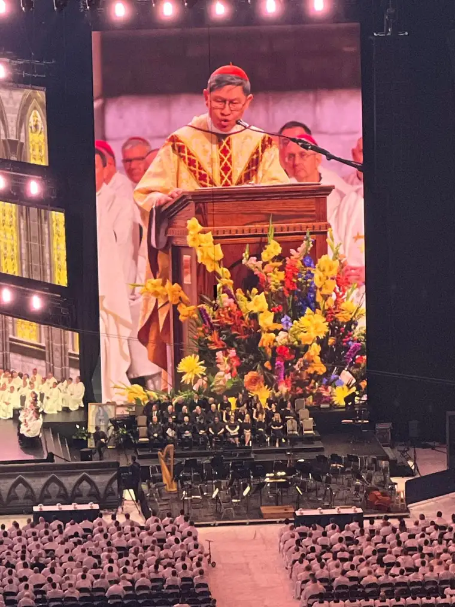
Several speakers launched the morning, including the energetic Chris Stefanick. I LOVED his sending-forth quote: “The first two letters in God’s name are G and O!”
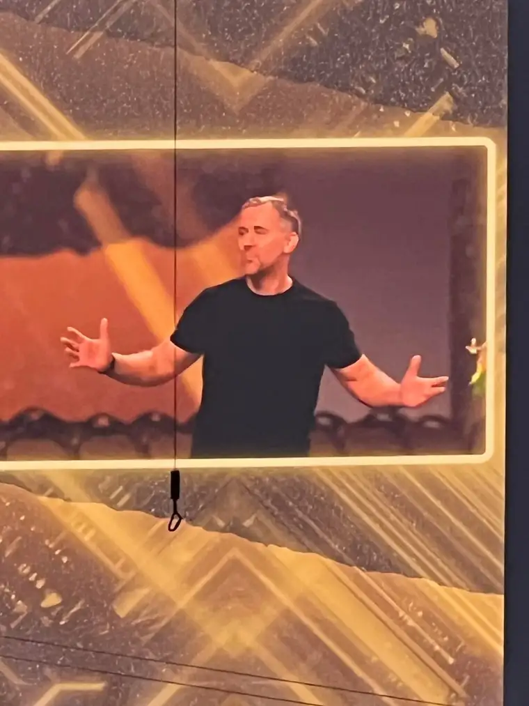
We were also introduced to Mother Adela Galindo, foundress of the sisters (Servants of the Pierced Heart of Jesus and Mary) whom we’d met that first day, who proclaimed, forthrightly, that “We do not have to be afraid to be in the Barque of Peter in the stormy seas, because we have Jesus as our captain!” (See here: https://www.youtube.com/watch?v=ZpuORJR3Wt8)
Cardinal Luis Antonio Tagle was celebrant of the Mass, but it really seemed like he was first assistant to the captain, prepared to send us off with pointed purpose. “When the priest says (at the end of Mass), ‘Go in the peace of Christ,'” he said, “Go! Do not spend the day drinking coffee with monsignor! Go! Let us go to proclaim Jesus joyfully and zealously for the life of the world!”
What a meaningful message. During that Mass, we felt Jesus in so many different ways. In one sense, we felt very far from him.
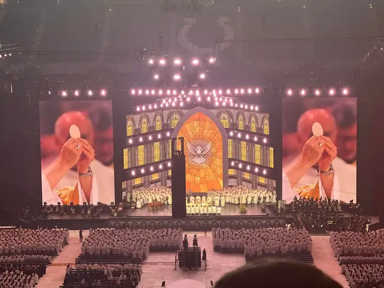
And in another sense, oh, so very close! We definitely felt his hug.
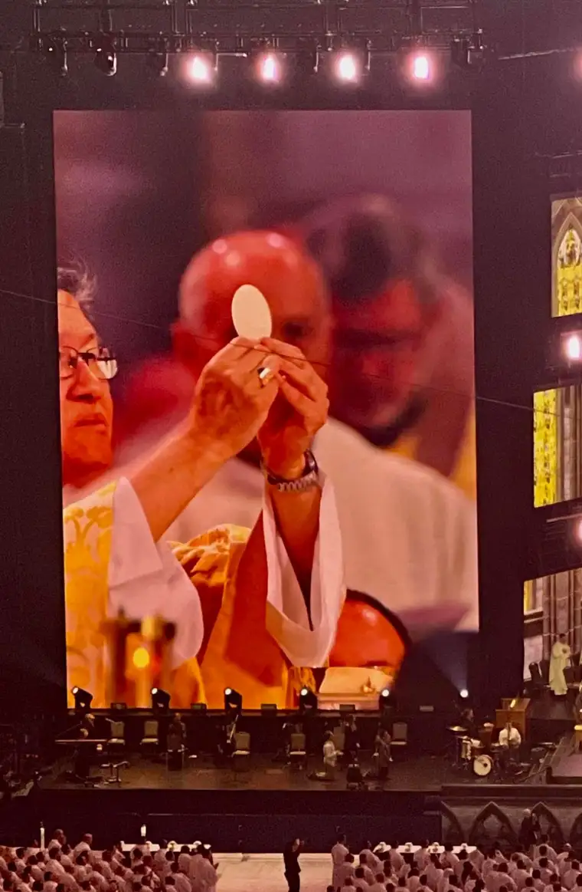
Once again, the priests ran to feed the crowds. No one was left hungry. Not one.
The next two shots come from the procession, when the bishops were ascending toward the altar.
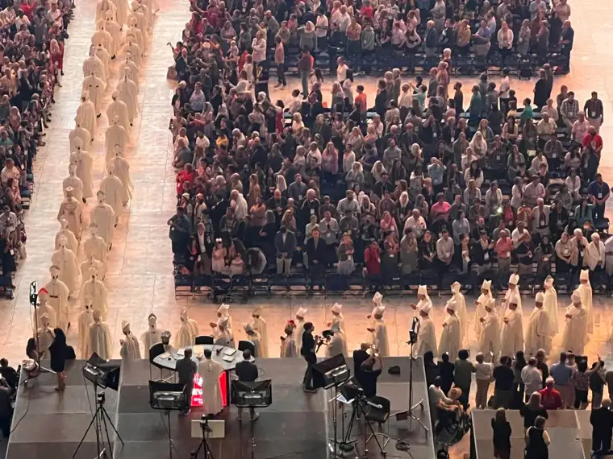
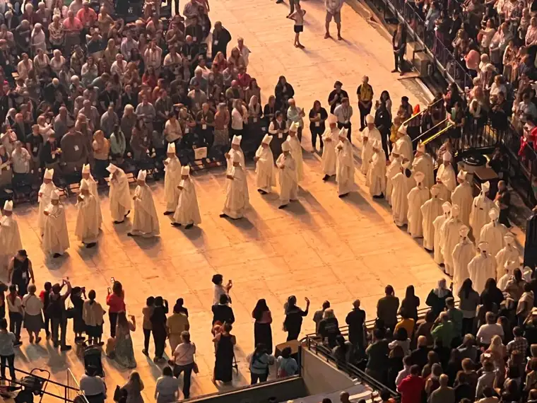
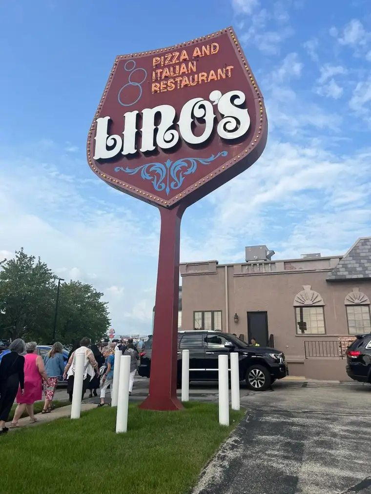
Bishop Cozzens closed out the congress, fittingly, as he’d opened it and led it, promising, promising us we will be doing this again sooner than in another 83 years (the span between the 9th event and the 10th, which we’d attended).
When it was over, we were instructed to find the bus, parked about 20 minutes away from the stadium. Somehow, Joanne and I were the first two pilgrims to make it to Bus 2. By now, our broken carrier had been fixed and was ready to transport us home. We would be making the return trip in two days, as we’d made the journey there in two, stopping in Rockford, Illinois for a absolutely divine meal at an Italian restaurant, served family style, and staying overnight at The Lodge in Mauston, Wisconsin, where we enjoyed a good night’s sleep!
Thank you for coming on this journey with me, through these blog posts. It was a lot of work to download all the photos and find the links. I would not have taken the time, but upon our return, recognizing the significance of the event, I knew that I’d want a written record somewhere of the amazing adventure we were honored to experience.
My parting words for now: Jesus loves you. Don’t let anything stand in the way between his love and you!